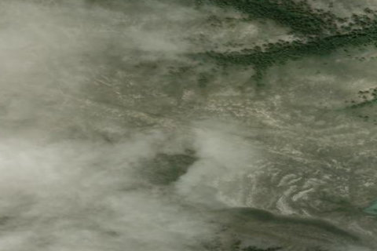

BULLWHACKER
BW8 · MT

Aerial imagery source: Esri, Vantor, Earthstar Geographics, and the GIS User Community
View original source (FAA + Montana MDT + Shortfield) →
| Identifier | BW8 |
|---|---|
| State | MT |
| Runway length | 1,500 ft |
| Runway width | 60 ft |
| Surface | TURF |
| Runway | 09/27 |
| Elevation | 3,100 ft |
| Ownership | public |
| CTAF | 122.9 |
| Coordinates | 47.84777777, -109.09944444 |
Notes
[montana_mdt] General Aviation Non-NPIAS Airport [montana_mdt] Non-NPIAS (Not part of the National Plan of Integrated Airport Systems). Airports that are public use and not in NPIAS. | [shortfield] Location Overview Bullwhacker Airstrip sits at roughly 3,100 feet MSL on the north side of the Missouri River within the Upper Missouri River Breaks National Monument in north-central Montana, near the town of Big Sandy. It's a 1,500-foot grass and dirt strip, one of six backcountry airstrips scattered across the Monument (alongside Woodhawk, Knox Ridge, Left Coulee, Black Butte North, and Cow Creek). The Monument spans 149 miles of the Upper Missouri River "Breaks" country, a name drawn from the Lewis and Clark journals describing the rugged, eroded terrain they encountered on their journey west. Camping & Recreation The airstrips offer scenic and remote dry camping, with no facilities, water, or services on site, so pilots fly in fully self-sufficient. Visitors can land and take a day hike, camp overnight, and possibly spot a world-class bighorn sheep. Ground-based hikers also reach the area, where trails wind through hoodoos and sandstone cliffs amid prairie wildflower blooms, with bighorn sheep, antelope, mule deer, and raptors commonly seen nearby. The broader Bullwhacker area connects via roughly 51 miles of existing BLM roads, giving hikers and four-wheelers additional ways to explore beyond the strip itself. Notes & Warnings The strip is unpaved and exposed to "gumbo" soil conditions common throughout the Breaks — a muddy soil that can become thick and slippery when wet, and pack hard as cement inside wheel pants when dry. Weather information for the area is spotty, so pilots should plan conservatively and check conditions carefully before departure. None of the Missouri Breaks strips are shown on current sectional charts, so pilots rely on backcountry airstrip guides and local knowledge rather than standard charting. As with any remote backcountry strip, expect no services, no fuel, and significant distance from help if something goes wrong. History The Bullwhacker strip's survival has been anything but guaranteed. After President Clinton's 2001 designation of the Upper Missouri River Breaks National Monument, numerous organizations pushed to close all roads and airstrips in the area, a threat that helped spur the founding of the Recreational Aviation Foundation. RAF co-founder Chuck Jarecki worked with the BLM district manager, gathering historic photos of each of the ten original airstrips, while local advocates attended public meetings to argue for their preservation. The fight intensified in 2009 when environmental organizations sued the BLM, claiming its management plan favored multi-use recreation over landscape protection; the RAF and Montana Pilots Association intervened on the BLM's side. Thanks to those efforts, six of the original ten airstrips, including Bullwhacker, remain charted and open today, and pilots now gather annually to celebrate the area at the Missouri River Breaks Fly-in. More recently, ground access to the wider Bullwhacker region has also evolved — in 2024 the BLM approved a seasonal 0.6-mile road connecting nearby Left Coulee airstrip to a broader network of public roads, restoring motorized access that had been limited for years.